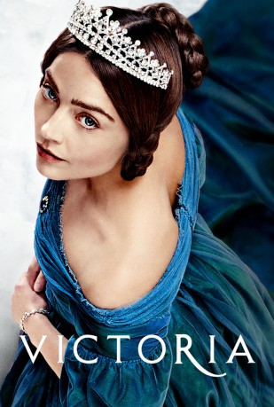

")
 
 IMDB-Wertung: 8.2 / 10
IMDB-Wertung: 8.2 / 10  Tomatometer: 82
Tomatometer: 82  Metascore:
Metascore: 
Das Leben der jungen Queen Victoria ist Thema der achtteiligen britischen Mini-Serie von ITV. Jenna Coleman spielt die Monarchin auf ihrem Weg von der Übernahme des Throns im Alter von 18 Jahren im Jahre 1837, über die Bekanntschaft zu und ihre Ehe mit Prinz Albert bis hinein in die mit 63 Jahren zweitlängste Regenschaft, die das Vereinigte Königreich erlebt hat ...
Jahr: 2016
Dauer: 69 Minuten
FSK:
Land: England Studio: ITV 1Tonspuren: DD2.0 - ,
Untertitel:
Auflösung: 720p (1280x720) Größe: 1341 MB
Genre: Drama, Geschichte, Biographie, TV-Serie
Regisseur: Oliver Blackburn, Tom Vaughan, Jim Loach, Sandra Goldbacher, Lisa James Larsson, Daniel O'Hara, Geoffrey Sax
Drehbuch: Daisy Goodwin
Soundtrack:
Darsteller:
 Adrian Schiller als Penge 17 episodes, 2016-2017
Adrian Schiller als Penge 17 episodes, 2016-2017 Daniela Holtz als Baroness Lehzen 16 episodes, 2016-2017
Daniela Holtz als Baroness Lehzen 16 episodes, 2016-2017 Tom Hughes als Prince Albert 15 episodes, 2016-2017
Tom Hughes als Prince Albert 15 episodes, 2016-2017 Nigel Lindsay als Sir Robert Peel 14 episodes, 2016-2017
Nigel Lindsay als Sir Robert Peel 14 episodes, 2016-2017 Catherine Flemming als Duchess of Kent 13 episodes, 2016-2017
Catherine Flemming als Duchess of Kent 13 episodes, 2016-2017 Alex Jennings als King Leopold 9 episodes, 2016-2017
Alex Jennings als King Leopold 9 episodes, 2016-2017 Rufus Sewell als Lord Melbourne 7 episodes, 2016-2017
Rufus Sewell als Lord Melbourne 7 episodes, 2016-2017 Peter Bowles als Duke of Wellington 7 episodes, 2016-2017
Peter Bowles als Duke of Wellington 7 episodes, 2016-2017 Robin Soans als Sir James Clark 6 episodes, 2016-2017
Robin Soans als Sir James Clark 6 episodes, 2016-2017 Peter Firth als Duke of Cumberland / ... 5 episodes, 2016-2017
Peter Firth als Duke of Cumberland / ... 5 episodes, 2016-2017 Richard Dixon als Lord Chancellor 2 episodes, 2016
Richard Dixon als Lord Chancellor 2 episodes, 2016 Simon Paisley Day als Lord Chamberlain 2 episodes, 2016
Simon Paisley Day als Lord Chamberlain 2 episodes, 2016 David Bamber als Duke of Sussex 2 episodes, 2016
David Bamber als Duke of Sussex 2 episodes, 2016 Andrew Havill als Dr. Pritchard 2 episodes, 2017
Andrew Havill als Dr. Pritchard 2 episodes, 2017 Martin Compston als Dr. Traill 1 episode, 2017
Martin Compston als Dr. Traill 1 episode, 2017 Catherine Steadman als Mrs. Forbes 1 episode, 2017
Catherine Steadman als Mrs. Forbes 1 episode, 2017 Alice Orr-Ewing als Lady Flora Hastings 1 episode, 2016
Alice Orr-Ewing als Lady Flora Hastings 1 episode, 2016 Michael Maloney als Bishop 1 episode, 2017
Michael Maloney als Bishop 1 episode, 2017 Nicholas Agnew als Prince George 1 episode, 2016
Nicholas Agnew als Prince George 1 episode, 2016 Bruce Mackinnon als Hannam 1 episode, 2016
Bruce Mackinnon als Hannam 1 episode, 2016 Denis Lawson als Duke of Atholl 1 episode, 2017
Denis Lawson als Duke of Atholl 1 episode, 2017Datei: X:\HD-Serien\Victoria\S01\Victoria S01E01 Puppe 123.mkv seit 07.03.2018
Festplatte: HD Serien(SU-Z)+Dokus+Musik
 Es gibt insgesamt 182 Filme in der Gruppe 'HD-Serien'
Es gibt insgesamt 182 Filme in der Gruppe 'HD-Serien'